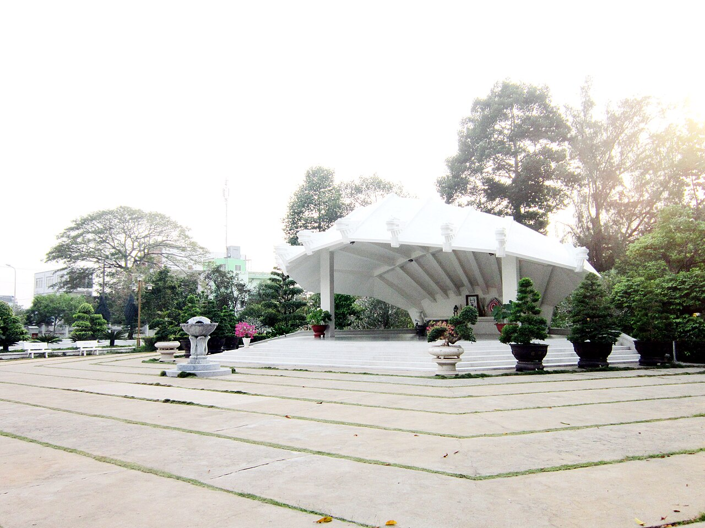
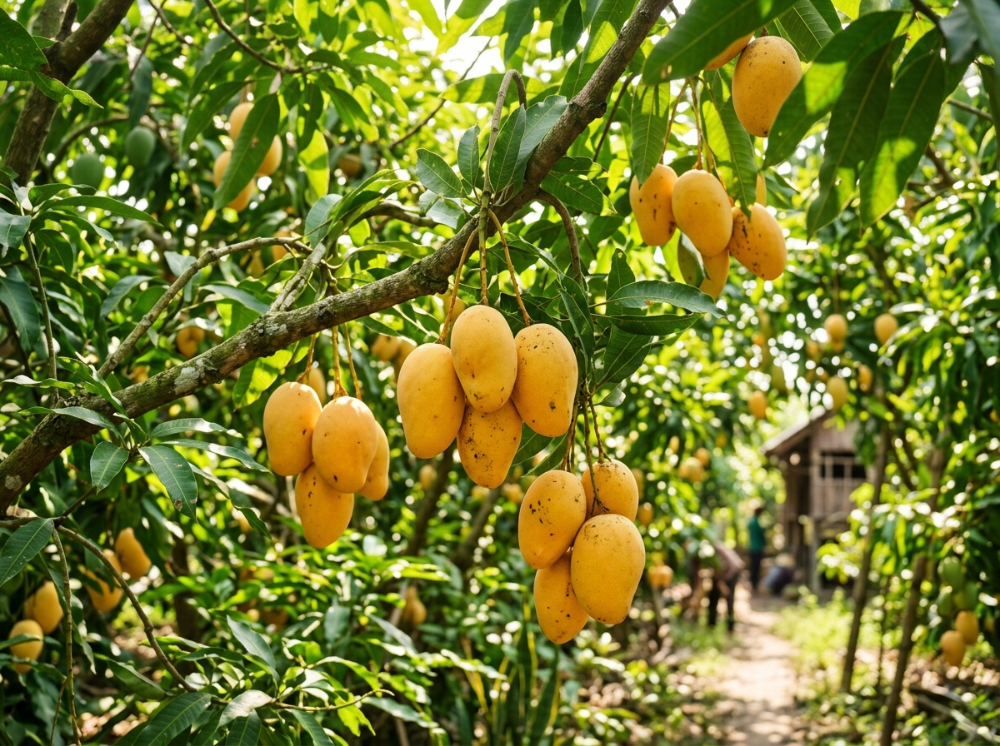
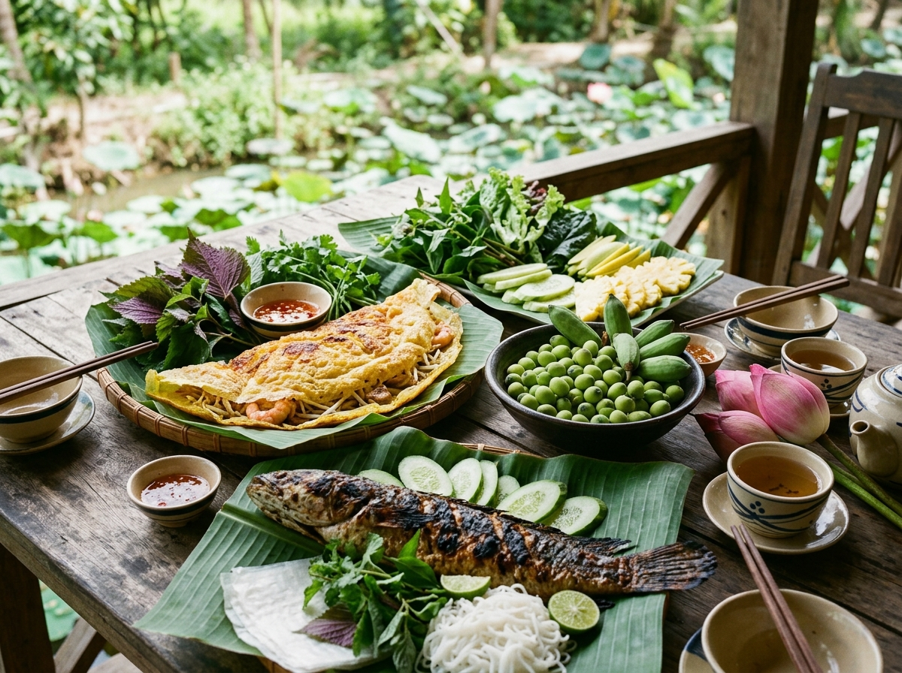

Chào Mừng Đến Với
Phường Cao Lãnh
Nơi hội tụ tinh hoa đất Sen Hồng bên dòng Tiền Giang trĩu nặng phù sa. Sự kết tinh giữa bề dày lịch sử cách mạng hào hùng, nét đẹp sinh thái miệt vườn trù phú và nhịp sống đô thị văn minh, hiện đại.
Vùng Đất Năng Động Bên Dòng Tiền Giang
Phường Cao Lãnh giữ vị trí trái tim đô thị của tỉnh Đồng Tháp, nơi giao thoa của sông nước miệt vườn thanh bình với không gian phát triển kinh tế số và dịch vụ hiện đại.
Vị Trí Trung Tâm
Tọa lạc tại khu vực trung tâm đô thị tỉnh Đồng Tháp, là đầu mối kết nối giao thông đường bộ và đường thủy quan trọng nối liền các huyện thị và tỉnh bạn qua cầu Cao Lãnh.
Bản Sắc Đất Sen Hồng
Mang đậm nét đẹp thuần khiết của hoa sen - biểu tượng niềm tự hào của con người Đồng Tháp nghĩa tình, năng động và mến khách.
Hệ Sinh Thái Trù Phú
Sở hữu những miệt vườn cây ăn trái quanh năm trĩu quả ven sông Tiền, đặc biệt là vựa xoài Cát Chu và Cát Hòa Lộc trứ danh xuất khẩu quốc tế.
Đô Thị Xanh - Văn Minh
Hệ thống công viên cây xanh, hồ sinh thái Văn Miếu, bờ kè thoáng mát tạo nên chất lượng sống yên bình nhưng không ngừng vươn mình đổi mới.
Hợp Nhất 09 Đơn Vị Hành Chính (Từ 01/07/2025)
Thực hiện chủ trương sắp xếp đơn vị hành chính cấp xã, phường giai đoạn 2023 - 2025, Phường Cao Lãnh chính thức đi vào hoạt động trên cơ sở hợp nhất toàn bộ diện tích và dân số của 9 đơn vị thành viên:
Số 03, Đường 30 Tháng 4, Phường Cao Lãnh, Tỉnh Đồng Tháp
Điểm Đến & Di Sản Nổi Bật
Khám phá những địa điểm mang đậm giá trị lịch sử thiêng liêng, vẻ đẹp sinh thái ngút ngàn và không gian thư giãn tuyệt vời tại Phường Cao Lãnh.

Di Tích Lịch SửKhu Di Tích Cụ Phó Bảng Nguyễn Sinh Sắc
Nơi yên nghỉ của thân sinh Chủ tịch Hồ Chí Minh vĩ đại. Quần thể gồm lăng mộ hình cánh sen thanh thoát, đền thờ uy nghiêm, nhà sàn Bác Hồ mô phỏng tỉ lệ 1:1 và không gian Làng Hòa An xưa mộc mạc đậm chất Nam Bộ.

Du Lịch Sinh TháiCù Lao Sinh Thái Tân Thuận Đông
Viên ngọc xanh giữa dòng sông Tiền mênh mông. Du khách được hòa mình vào không gian miệt vườn rợp bóng nhãn, xoài, trải nghiệm chèo xuồng ba lá, đạp xe qua những con đường làng râm mát và tham gia "Chợ quê Tân Thuận Đông" dân dã.
Vườn Xoài Cát Chu & Tân Thuận Tây
Thủ phủ của giống Xoài Cát Chu và Xoài Cát Hòa Lộc nức tiếng. Đến đây, du khách được tận mắt chiêm ngưỡng những gốc xoài cổ thụ trĩu quả, thưởng thức xoài chín cây ngọt lịm và trải nghiệm mô hình "Cây xoài nhà tôi" độc đáo.
Công Viên Văn Miếu & Hồ Khổng Tử
Lá phổi xanh ngát giữa trung tâm phường với hồ sen thơ mộng, đường dạo bộ uốn lượn và Văn Thánh Miếu ghi danh truyền thống hiếu học của đất và người Đồng Tháp. Là điểm hẹn sinh hoạt thể thao, văn hóa rộn rã mỗi sớm chiều.

Hương Vị Ẩm Thực Khó Quên
Đến với Phường Cao Lãnh, du khách không chỉ say đắm lòng người bởi cảnh sắc thanh bình mà còn ngất ngây bởi tinh hoa ẩm thực dân dã nhưng đậm đà thi vị.
Bánh Xèo Cao Lãnh
Vỏ bánh giòn rụm màu vàng nghệ thơm nước cốt dừa, nhân thịt vịt băm hoặc tôm thịt cùng củ hủ dừa ngọt mát, cuốn cùng hơn 20 loại rau vườn tươi non.
Cá Lóc Nướng Trui Cuốn Lá Sen Non
Cá lóc đồng nướng rơm thơm lừng, thịt ngọt béo được cuộn trong búp lá sen non thoang thoảng vị chát dịu, chấm nước mắm me sệt cay nồng khó cưỡng.
Các Món Ngon Từ Sen Đồng Tháp
Cơm hấp lá sen, gỏi ngó sen tôm thịt, chè hạt sen long nhãn ngọt thanh và tách trà hoa sen thơm ngát ướp hương sông nước trời mây.
Xoài Cát Chu Cao Lãnh Trứ Danh
Mùi thơm nồng nàn, thịt chắc ngọt đậm đà, hạt nhỏ, vỏ mỏng - món quà biếu quý giá được bè bạn năm châu đặc biệt yêu thích.
Ủy Ban Nhân Dân Phường Cao Lãnh
Tra cứu thông tin cơ quan hành chính, vị trí địa lý và các kênh liên hệ trực tuyến phục vụ người dân, doanh nghiệp và du khách.
Thông Tin Cơ Bản
- Cơ quan quản lý: Ủy ban nhân dân Phường Cao Lãnh
- Địa chỉ trụ sở: Số 03, đường 30 Tháng 4, Phường Cao Lãnh, Tỉnh Đồng Tháp
- Ngày thành lập: 01 tháng 07 năm 2025
- Diện tích: Khoảng 73,33 km²
- Dân số: Hơn 137.000 người
- Giờ làm việc: Thứ 2 - Thứ 6 (07:00 - 11:30 | 13:30 - 17:00)
- Hotline hành chính: 1900 1022 (Tổng đài dịch vụ công Đồng Tháp)